데이터 가공¶
선택한 파일을 사용자가 지정한 작업에 따라 변경합니다. 작업에는 열 병합/분할/삭제, 값 변환 등이 있습니다. 먼저 데이터 선택 화면에서 선택한 파일/구분자에 따라 샘플 데이터를 그리드 뷰에 출력합니다. 이후 메뉴 바와 작업 설정창을 통해 작업을 추가 및 적용하면, 이에 따라 샘플 데이터가 변경됩니다.
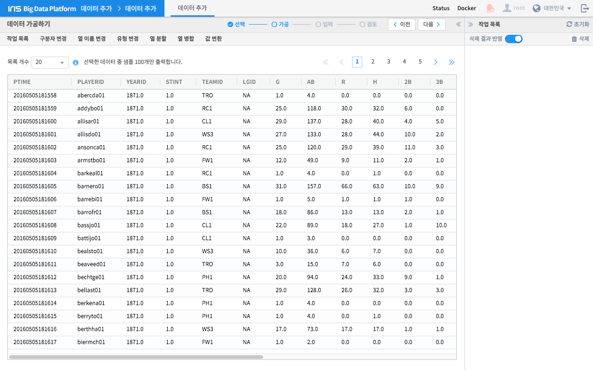| 번호 | 구분 | 설명 |
| 1 | 네비게이션 | 현재 작업 단계를 나타냅니다. |
| 2 | 이전/다음 버튼 | 단계를 이동합니다. 조건이 충족되어야 가능합니다. |
| 3 | 작업 메뉴 바 | 수행 가능한 작업들이 메뉴 형태로 나열되어 있어 클릭하면 해당 작업을 설정창을 통해 수행합니다. |
| 4 | 작업 목록 | 지금까지 수행한 작업 항목들을 목록 형태로 보여줍니다. |
| 5 | 가공 결과 미리보기 | 가공 작업의 결과를 미리 볼 수 있는 그리드뷰 입니다. |
작업 목록¶
사용자가 적용한 가공 작업 항목들을 순서대로 나열합니다. 삭제하거나 초기화할 수 있습니다.
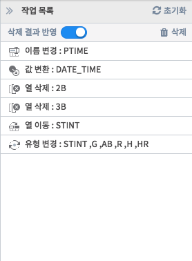구분자 변경¶
데이터 선택하기 화면에서 지정한 구분자를 변경합니다. 가공 작업 이전에 한 번만 적용됩니다. 만약 데이터 선택하기 화면에서 구분자를 잘못 입력했다면 이 기능으로 수정할 수 있습니다.
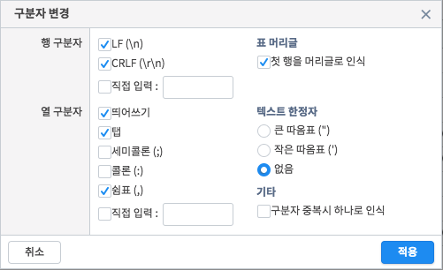열 이름 변경¶
선택한 열의 이름을 변경합니다. 이름 규칙은 IRIS 데이터베이스를 기준으로 합니다.
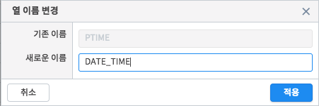유형 변경¶
선택한 열의 값 유형을 지정/변경합니다. 지정할 수 있는 값 유형은 다음과 같습니다.
| 이름 | 설명 |
| TEXT | 문자열 유형입니다. 처음에는 모든 열이 TEXT 유형으로 설정됩니다. |
| INTEGER | 정수 숫자 유형입니다. 이 유형으로 변환시 소수점 자리수 값이 버려집니다. |
| REAL | 실수 숫자 유형입니다. |
“일괄 변경” 메뉴를 통해 열의 유형을 한꺼번에 지정할 수도 있습니다.
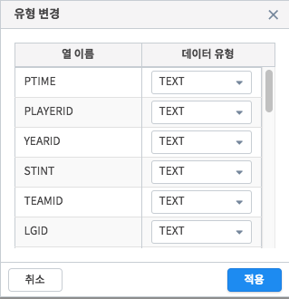열 분할¶
선택한 열을 입력한 조건으로 분할하거나 새로운 열을 추가합니다.
문자열 개수로 분할을 선택하면 입력한 숫자에 따라 문자열을 분할합니다.
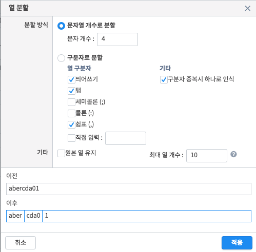구분자로 분할을 선택하면 선택 혹은 입력한 구분자에 따라 문자열을 분할합니다.
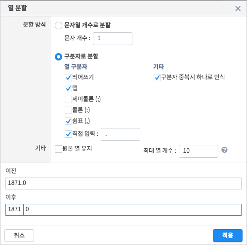원본 열 유지 설정을 하면 선택한 열을 분할하지 않고 분할 결과를 새로운 열로 추가합니다.
열 병합¶
선택한 2개 이상의 열을 입력한 조건으로 병합하거나 새로운 열을 추가합니다. 현재 버전에서는 텍스트를 구분자처럼 지정하여 열 병합을 수행할 수 있습니다.
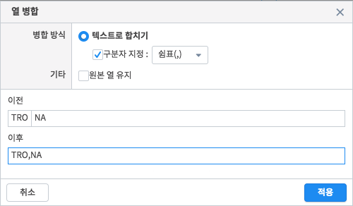원본 열 유지 설정을 하면 선택한 열을 병합하지 않고 병합 결과를 새로운 열로 추가합니다.
값 변환¶
선택한 열의 값을 입력한 조건에 따라 변환합니다. 문자열, 숫자, 날짜 유형에 따른 세가지 변환 방식을 제공합니다.
문자열 방식은 잘라내기, 치환, 덧붙이기 세 가지 방식을 한 번에 지정할 수 있습니다. 이는 순차로 수행됩니다.
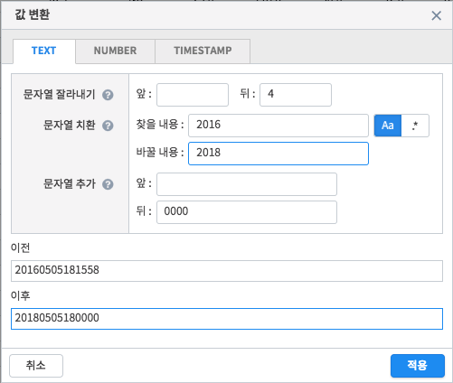숫자 방식은 연산자와 값을 입력받아 변환하는 방식입니다. 원본 값이 숫자가 아닐 경우 정상적으로 수행되지 않습니다.
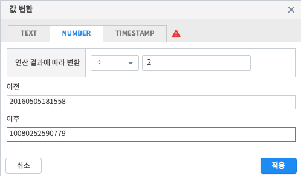날짜 방식은 원본 날짜 값을 다른 형식으로 변환하는 방식입니다. 원본 값의 날짜 형식과 변환 결과의 날짜 형식을 모두 지정해야 합니다.
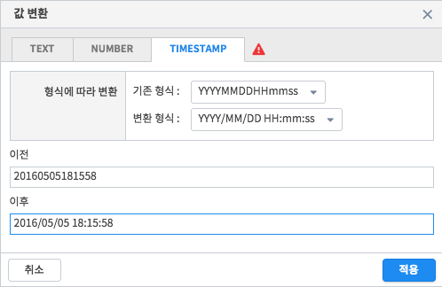열 삭제¶
특정 열을 제거합니다.
열 헤더를 마우스 드래그하여 열을 제거할 수 있습니다. 제거한 열의 데이터는 이후 작업에 더이상 포함되지 않습니다. 제거한 열은 작업 목록에서 항목을 삭제하여 다시 복구할 수 있습니다.